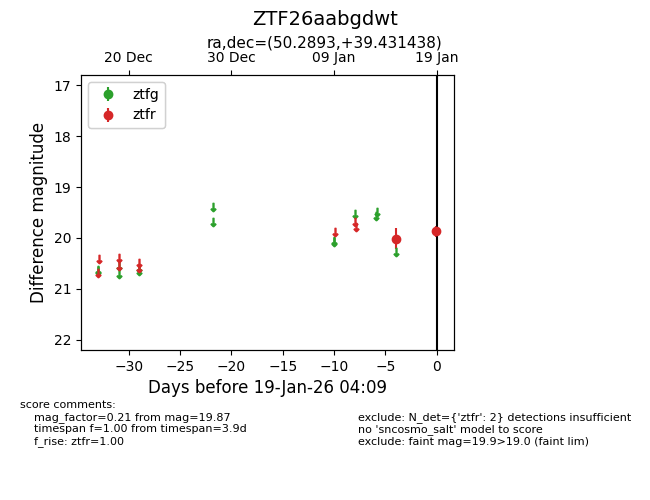
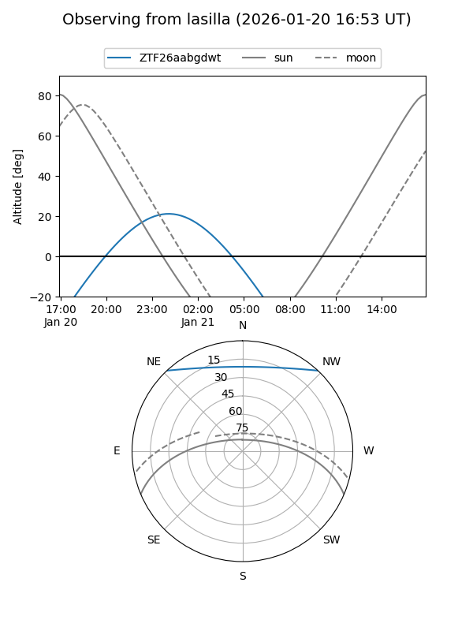
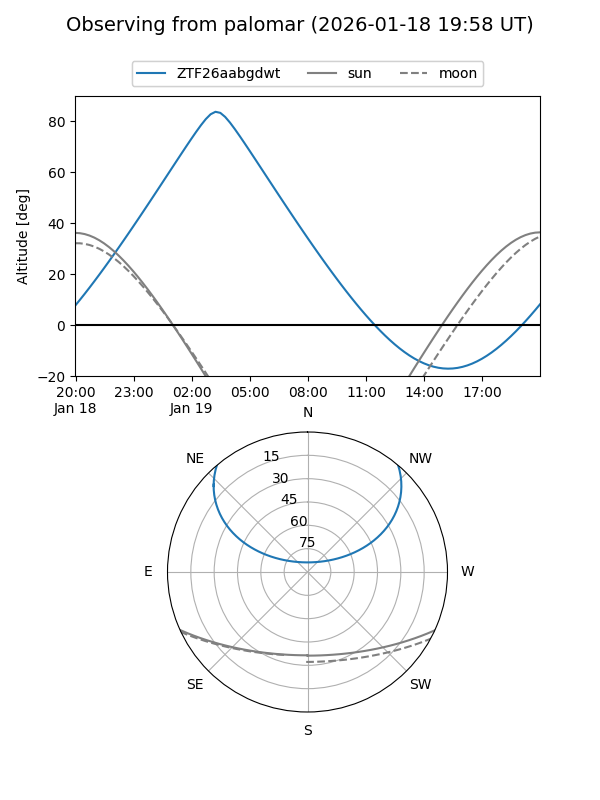

ZTF26aabgdwt
Target ZTF26aabgdwt at 2026-01-19 04:10
Aliases and brokers:
FINK: link
Lasair: link
ALeRCE: link
alt names
ZTF26aabgdwt (ztf,fink_ztf)
Coordinates:
equatorial (ra, dec) = 50.2893,+39.43144
equatorial (HMS+DMS) = 03:21:09.44,+39:25:53.18
galactic (l, b) = (151.9879,-14.84788)
Flags:
Photometry:
last ztfr=19.87
2 ztfr detections
Lightcurve

Visibility


Additional plots